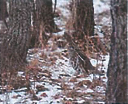

This part of the forest is home to many wildlife species like white-tailed deer, snowshoe hare, and red-backed vole.
The dense shrubs provide food or browse for deer in the winter. Take a close look at the ends of twigs and see if you can find ONE that has  not been chewed on. Look for the reddish bark of the red-osier dogwood, their preferred browse.
The boreal mixedwood forest is also one of the richest environments for breeding songbirds in North America. Over 250 bird species, most of them migrants, have been recorded in the boreal ecosystems. It is the abundance of protein-rich 'bugs' which makes this forest so attractive for them.
Your final stop is just ahead.